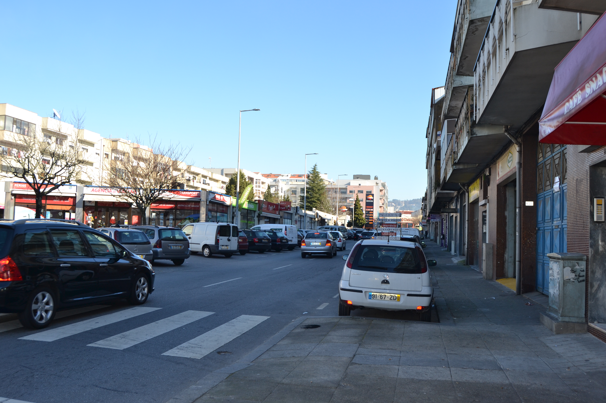

40 Rua do Paymanta
Rua de zona rural, que antes deveria ser chamada de cangosta, mesmo para os padrões do séc. XVIII .
Ligando a rua da Ponte de Guimarães com o pontilhão das Lages estava, em 1750 , marginada por prédios de um e dois pisos do lado Sul e de apenas um piso no Norte.
Todas estas casas são extraordinariamente simples, estão implantadas em terreno não nivelado, com uma técnica construtiva rudimentar, como nos mostram as pequeníssimas aberturas das habitações de dois pisos.
No termo da rua está a magnífica casa seiscentista das Lages, "deque he Emphiteuta Pedro da C.ª Sottomaior " que foi Alcaide Mor de Braga . É este sem dúvida o edifício civil que aparece
no Mappa e, o que mereceu mais cuidado no desenho.
Era uma casa com pedra de armas sobre um portão que dava acesso a um páteo interior, vedado por uma cerca ameada. Tinha três corpos que terminavam na margem do rio Este.
Sobre o curso de água, tinha um anexo coberto, talvez um moinho. Infelizmente está hoje destruído todo este conjunto.
Das 17 casas do lado Norte e 16 do Sul eram todas prazos do Cabido .
Não tem hoje uma correspondência correcta pois andava entre as actuais ruas de Pai Amante (que está em vias de completo desaparecimento) e Conselheiro Lobato .
Casas
1 Pertence ao nº 46 da Rua da Ponte de Guimarães , para onde tem a frontaria principal.
2 Pedro da Cunha Sottomayor, Alcaide Mor de Braga Os herdeiros de Margarida Fernandes pagam 100 reis ao n° 17.
3 e 4 Pedro da Cunha Sottomayor, Alcaide Mor de Braga Pagam foro ao nº 17. A casa n° 3 confronta, do nascente, com terra do prazo da quinta e moinhos da Serra .
5 Pedro da Cunha Sottomayor, Alcaide Mor de Braga Paga foro ao nº 17.
6 Pedro da Cunha Sottomayor, Alcaide Mor de Braga Paga foro ao nº 17.
7 Pedro da Cunha Sottomayor, Alcaide Mor de Braga Paga foro ao nº 17.
8 Pedro da Cunha Sottomayor, Alcaide Mor de Braga Paga foro ao nº 17.
9 Pedro da Cunha Sottomayor, Alcaide Mor de Braga Paga foro ao nº 17.
10 Pedro da Cunha Sottomayor, Alcaide Mor de Braga Paga 180 reis ao nº 17.
11 Pedro da Cunha Sottomayor, Alcaide Mor de Braga Paga 180 reis ao nº 17.
12 Pedro da Cunha Sottomayor, Alcaide Mor de Braga Paga 350 reis ao nº 17.
13 Pedro da Cunha Sottomayor, Alcaide Mor de Braga Paga 80 reis ao nº 17.
14 Pedro da Cunha Sottomayor, Alcaide Mor de Braga Paga 80 reis ao nº 17.
15 Pedro da Cunha Sottomayor, Alcaide Mor de Braga Paga 80 reis ao nº 17.
16 Pedro da Cunha Sottomayor, Alcaide Mor de Braga Paga 80 reis ao nº 17.
17 Pedro da Cunha Sottomayor, Alcaide Mor de Braga 960 reis, 10 alqueires de trigo, 25 de pão meado e 4 galinhas Esta casa é cabeça do prazo da quintã e moinhos da Serra e da Ribeira . O enfiteuta possuia esta quintã que fora emprazada a seu ' familiar, o Padre Fernão Anes , no ano de 1532 . O prazo é constituído pelos números: 2 a 16 e 18 a 32; 9 a 23 e 28 a 46 da Ponte de Guimarães ; 22 a 34 e 51 a 74 da Rua da Ponte de Guimarães .
18 Pedro da Cunha Sottomayor, Alcaide Mor de Braga Paga 80 reis ao nº 17.
19 Pedro da Cunha Sottomayor, Alcaide Mor de Braga Paga 80 reis ao nº 17.
20 Pedro da Cunha Sottomayor, Alcaide Mor de Braga Paga 150 reis ao nº 17.
21 Pedro da Cunha Sottomayor, Alcaide Mor de Braga Os herdeiros de Domingos Fernandes , casado com Isabel Gonçalves , pagam 200 reis ao n° 17.
22 Pedro da Cunha Sottomayor, Alcaide Mor de Braga Paga 190 reis ao nº 17.
23 e 24 Pedro da Cunha Sottomayor, Alcaide Mor de Braga Paga 190 reis ao nº 17.
25 e 26 Pedro da Cunha Sottomayor, Alcaide Mor de Braga Os herdeiros de Belchior Fernandes , casado com Ana Dias , pagam 400 reis e 2 galinhas ao nº 17.
27 Pedro da Cunha Sottomayor, Alcaide Mor de Braga Paga 100 reis ao nº 17.
28, 29 e 30 Pedro da Cunha Sottomayor, Alcaide Mor de Braga Paga 200 reis ao nº 17.
31 Pedro da Cunha Sottomayor, Alcaide Mor de Braga Paga 50 reis ao nº 17.
32 Pedro da Cunha Sottomayor, Alcaide Mor de Braga Paga 30 reis ao nº 17.
33 Pedro da Cunha Sottomayor, Alcaide Mor de Braga Corresponde ao nº 51 da Rua da Ponte de Guimarães , para onde tem a frontaria principal.
Visão original


Visão atual
